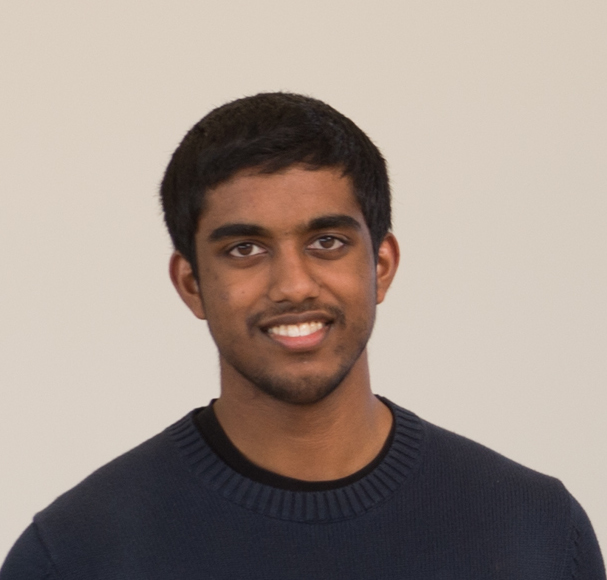

James Thomas

I am currently a second-year Computer Science PhD student at Stanford working with Professors Matei Zaharia and Pat Hanrahan on applications and programming models for FPGAs.
I received S.B. and M.Eng. degrees in EECS from MIT in June 2016.
CV
Research Papers and Presentations
- Starting during my M.Eng., I have worked on Weld, an intermediate language for data parallel computations that targets vector units, multicores, and GPU's. Here is a short paper on our work that appeared at CIDR 2017. Here is a longer paper in VLDB 2018.
- As part of the SuperUROP undergraduate research program at MIT, which I completed in the Supertech group, and the spring 2015 research course 6.886, I worked on a graph-parallel computation framework designed to run physical simulations on locally connected 3D mesh graphs. A paper on this work can be found here.
Internship Presentations
- At Microsoft Research in the summer of 2015, I worked on a library for incremental computation on top of Apache Spark. My end-of-internship presentation can be found here.
- At Cloudera in the summer of 2014, I worked on a number of improvements to the open-source Hadoop Distributed Filesystem (HDFS). A presentation I gave on my work can be found here.
Class Reports
- For the final project of 6.111 (Digital Circuits) in fall 2014, my team built a system for automatic correction of the input to a projector based on the projector's angles of tilt so that the output would not appear distorted. This project was recognized as one of the best in the course at the annual EECS awards ceremony. The project writeup can be found here.